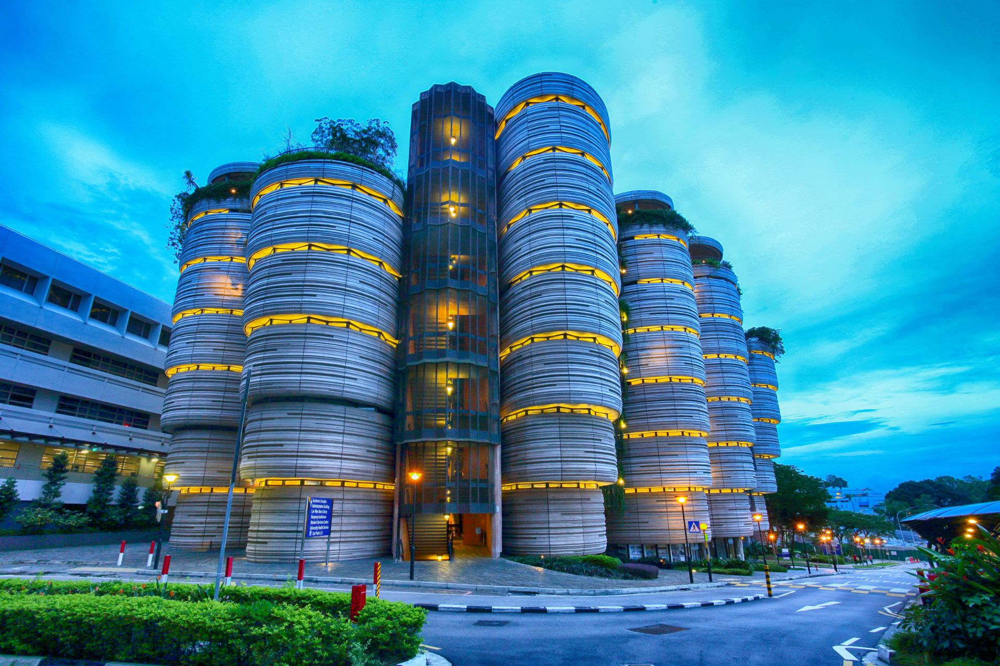
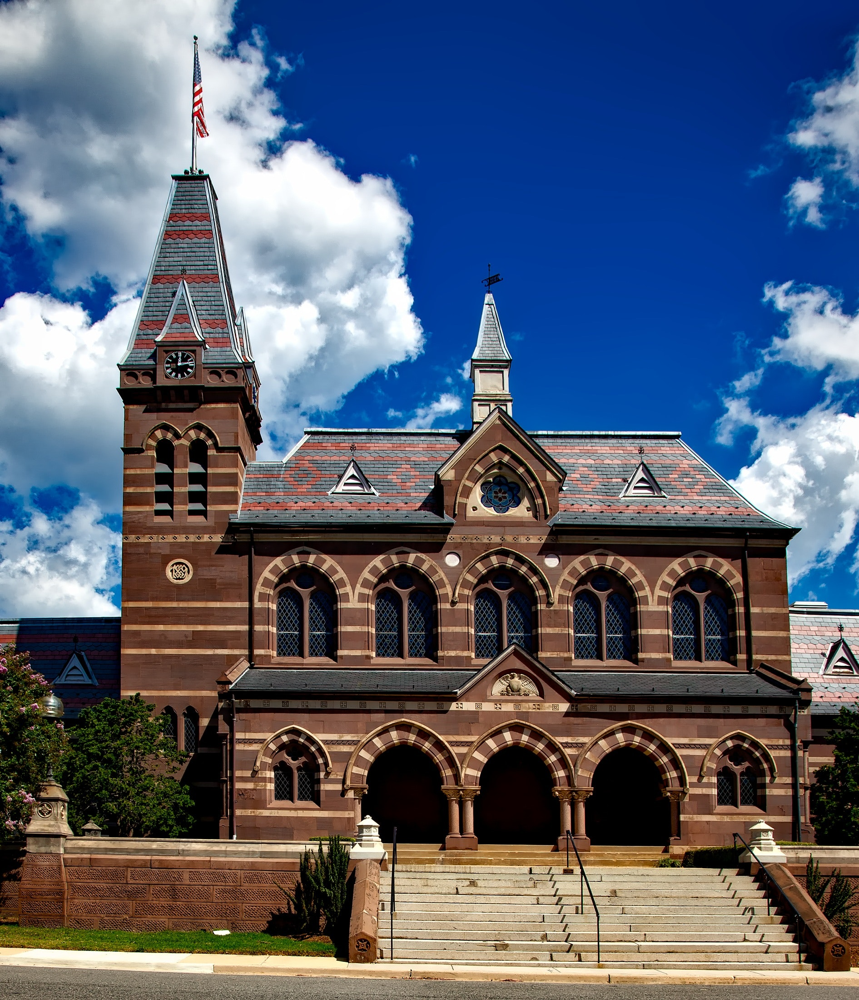
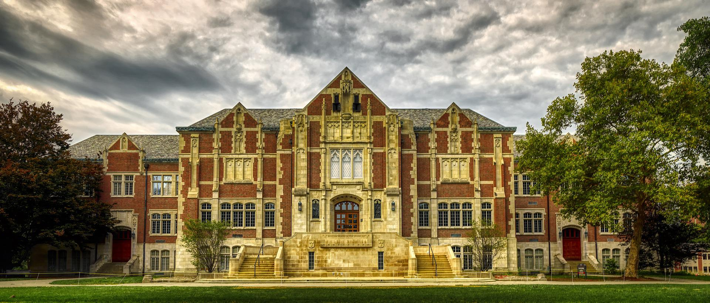
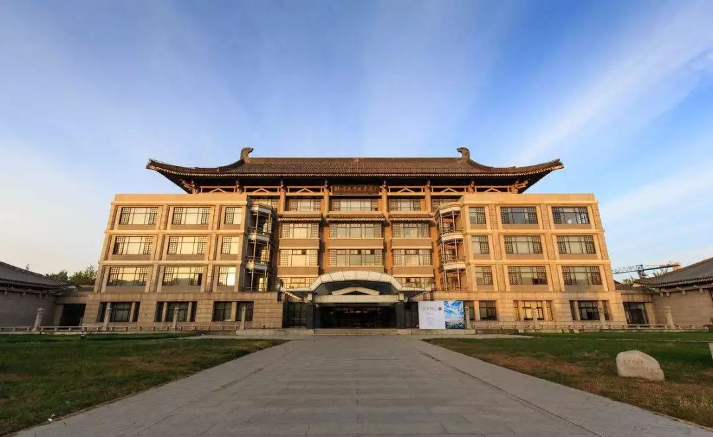

Location

This is Sunbic University branch that located in Singapore,
this branch has been born since 2010, and now this University
has around 12000 student that still active. Every year this
university branch admitting the new students around 3000 students.
The most famous degree in this university branch is architecture degree
that admitting around 30% of total new students per year.

This is Sunbic University branch that located in Dutch,
this branch has been born since 1945, and become the oldest branch
with the first computer science degree in the world. Every year this
university branch admitting the new students around 2500 students.
The most famous degree in this university branch is computer science
degree.

This is Sunbic University branch that located in Australia, this branch
has been born since 1980, with around 20000 students that still active
in this campus, it becomes the most famous branch because of the aesthetic
building. Every year this branch admitting the new students
around 4500 students. The most famous degree in this branch is Information System.

This is Sunbic University branch that located in China,
this branch has been born since 2004. Every year this branch admitting
around 3500 new students and this branch is known for the foreign exchange
student. The most famous degree in this branch is Management, and Psychology degree.
This branch also famous with a lot of defree in it, and become the most crowded campus.
Alumni
Hubert Joly
- Singapore branch bachelor degree of Computer Science
- Software Engineer at Google in Singapore from 2013-2014
- Software Development Engineer at Amazon in Scotland from 2014 - 2015
- CEO of EXO company from 2016 - present
- 28 years old
Carlos Torres
- Australia branch bachelor degree of Computer Science
- Product Manager at Amazon from 2004 - 2006
- Accountant at Baker Tilly Melbourne from 2006 - 2009
- Marketing Specialist at Smith Brothers Media from 2009 - present
- 38 years old